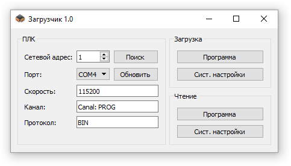

Утилита "Загрузчик" предназначена как для загрузки в контроллер программы и настроек так и для их чтения.
Программа загружается и читается в виде двоичного файла с инструкциями процессору (файл с расширением bin). Он создаётся в результате успешной сборки проекта. Обратное преобразование (из bin файла в kon) невозможно. Поэтому считанную из контроллера программу невозможно скорректировать без исходных файлов проекта. Настройки контроллера хранятся в файле с расширением sfr.
Для общей информации ниже изложен внутренний механизм программирования контроллера.
При подаче питания на контроллер в нём запускается небольшая программа (bootloader), которая позволяет загрузить в контроллер код по протоколу Y-Modem. В контроллере имеется энергонезависимая память, часть которой распределена на системные нужды. В этой области памяти хранится кодовое слово, показывающее что в контроллер ранее была успешно загружена программа. Если bootloader обнаруживает это кодовое слово в памяти он сразу же передаёт управление основной программе и контроллер начинает работать в соответствии с её алгоритмом. В противном случае bootloader ожидает загрузки новой программы в контроллер.
Есть 2 способа заставить контроллер задержаться в режиме загрузчика. Первый - стереть кодовое слово, используя команды доступа к памяти по интерфейсу RS485. Второй вариант требует применения пульта - при подаче питания на контроллер необходимо удерживать на пульте кнопку F2.
Программирование происходит следующим образом. Сначала выполняется поиск контроллера по заданным настройкам (сетевой адрес и COM порт). Как только контроллер обнаруживается, в памяти стирается кодовое слово и даётся команда на перезапуск контроллера. Контроллер остаётся в режиме bootloader-а. После этого начинается загрузка программы по протоколу Y-Modem. По окончании этого процесса управление автоматически переходит к загруженной программе и она записывает кодовое слово в энергонезависимой памяти контроллера. Поэтому при последующих перезапусках программа стартует в штатном режиме (bootloader передаёт управление основной программе).
Если процесс программирования по какой-либо причине был прерван, то контроллер при подаче питания будет оставаться в режиме bootloader-а до тех пор пока в него не будет загружена новая программа. Bootloader не использует в своей работе сетевой адрес контроллера. Поэтому программирование в этом случае будет возможно только по нулевому адресу.
Для программирования может использоваться только канал PROG контроллера.
Чтение программы выполняется в штатном режиме по протоколам RKBIN/ASCII. При этом считывается вся доступная flash память контроллера. Поэтому этот процесс занимает больше времени чем запись.
Настройки контроллера хранятся в энергонезависимой памяти и могут читаться/писаться, используя протокол RKBIN/ASCII.

Последовательность действий при загрузке программы и настроек.
Последовательность действий при чтении программы и настроек.
Если контроллер находится в режиме загрузчика, то это говорит о том, что по какой-либо причине предыдущий процесс программирования не был корректно завершён. Поэтому чтение программы или настроек будет невозможно.